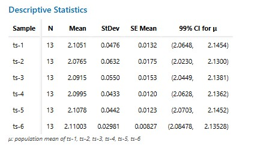

text dxsfsdf
assay test - 1.95 - 2.30
Cpk
| ts | 1 | 2 | 3 | 4 | 5 | 6 |
|---|---|---|---|---|---|---|
| Cpk | 1.11 | 1.23 | 1.11 | 1.52 | 1.24 | 1.78 |
| stDev | 0.048 | 0.063 | 0.055 | 0.043 | 0.044 | 0.03 |
Cpk Formula
The Cpk is calculated as: \[ Cpk = \min \left( \frac{USL - \mu}{3\sigma},\; \frac{\mu - LSL}{3\sigma} \right) \]
2.Confidence interval
\[ \bar{x} \pm t_{\frac{\alpha}{2}} \times \frac{S}{\sqrt{n}} \]

All six test samples (ts-1 through ts-6) show 99% Confidence Intervals (CI) for the mean that lie comfortably within the 1.95 – 2.30 specification range.